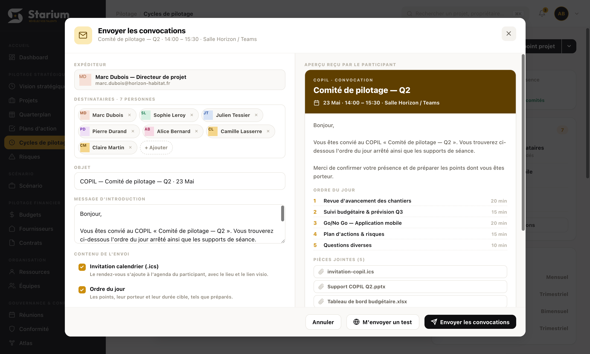

Points projet
Spécification écran par écran du parcours complet d'un point de gouvernance : du tableau de bord à la clôture. Pour chaque écran, la capture réelle de l'application annotée zone par zone, les écarts qui restent à développer, les interactions, les états, les messages affichés et les critères de recette.
6 capturés dans l'app, 2 à créer
plan, comportement, annexe recette
à préparer → historique
vérifiables un par un
Comment lire ce document
Chaque écran occupe deux pages. La première porte le plan : un schéma de blocs numérotés et la description de chaque zone. La seconde porte le comportement : interactions, états, messages, critères de recette. Rien n'est laissé à l'interprétation — si une règle n'est pas écrite ici, elle n'existe pas.
- Capture réelle de l'application, avec des pastilles numérotées posées sur chaque zone. Les six écrans qui existent aujourd'hui sont montrés tels quels — pas de wireframe.
- Zones numérotées : les pastilles de la capture renvoient à la liste. Une zone = un composant ou un groupe.
- Rôle : à quoi sert l'écran, en une phrase. Sert d'arbitre quand une question n'est pas tranchée.
- Écarts entre la maquette et la cible : ce qui manque sur la capture et reste à développer. C'est la liste de travail réelle.
- Bandeau bas : d'où l'on arrive, où l'on va, et les cas particuliers.
- Interactions : chaque élément cliquable, et ce qu'il déclenche exactement.
- États de l'écran : normal, vide, chargement, erreur, lecture seule. Tous sont à produire.
- Messages : le texte exact affiché à l'utilisateur, entre guillemets. À reprendre mot pour mot.
- Contrôles : ce qui bloque, ce qui avertit sans bloquer.
- Les critères de recette de tous les écrans sont regroupés dans l'annexe recette, en fin de document — quatre pages à donner telles quelles au testeur.
- Les écrans 05 Démarrer la séance et 07 Clôture n'existent pas dans la maquette : leur page porte un bandeau ambre « écran à créer » et un schéma de blocs à la place de la capture.
- Sur les six autres écrans, ce qui n'est pas visible sur la capture est listé dans « Écarts entre la maquette et la cible ».
- Les libellés entre guillemets sont définitifs. Les libellés sans guillemets sont indicatifs.
- Aucun écran ne se recharge : la navigation entre sous-onglets et entre points se fait sans perte de contexte.
- Toute saisie est enregistrée au fil de la frappe. Il n'y a pas de bouton « Enregistrer » sur les écrans de travail.
Le parcours et ses huit écrans
Un point projet se traverse toujours dans le même ordre. Chaque écran a une sortie unique vers l'écran suivant, et un seul geste la déclenche. C'est cette linéarité qui rend le module implémentable sans ambiguïté.
| # | Écran | Nature | État du point | Le geste qui fait sortir de l'écran | Écran suivant |
|---|---|---|---|---|---|
| 01 | Dashboard Points projet | Onglet de liste | tous | Clic sur « Créer un point », ou sur l'action de ligne d'un point existant | 02, ou 03 / 06 / 07 selon l'état |
| 02 | Créer un point | Modale | à préparer | « Créer » ou « Créer et préparer » | Retour au 01, ou 03 |
| 03 | Préparer la séance | Écran de travail | à préparer | « Figer l'ordre du jour » | 04 |
| 04 | Envoyer la convocation | Modale deux volets | à venir | « Envoyer les convocations » | Retour au 03, suivi des réponses |
| 05 | Démarrer la séance | Écran de lancement | à venir | « Démarrer la séance » | 06 |
| 06 | Déroulement de la séance | Écran de travail live | en cours | Dernier point traité, puis « Clôturer la séance » | 07 |
| 07 | Clôture de la séance | Écran de contrôle | en cours | « Confirmer la clôture » | 08 |
| 08 | Compte-rendu & diffusion | Écran de travail | à finaliser | « Diffuser le compte-rendu » | Historique, lecture seule |
| 09 | Ajouts à la volée | Gestes transverses | 03 et 06 | Aucune sortie : l'ajout se fait en place | On reste sur l'écran |
Dashboard « Points projet »
 123456
123456Point d'entrée unique du module. Regroupe toutes les instances de gouvernance du projet, réparties par état d'avancement. C'est la file de travail du chef de projet : ce qu'il doit préparer, ce qui arrive, ce qu'il doit finaliser.
- Barre d'onglets de la fiche projet. « Points projet » en dernière position, souligné en ambre quand actif. Le bloc d'en-tête projet au-dessus n'appartient pas au module.
- Bandeau de 4 indicateurs. Prochain point · Points ce trimestre · Actions issues des points · Décisions COPIL à appliquer. Valeur en gros, précision colorée en dessous.
- Barre de 6 sous-onglets avec compteur collé au libellé : À préparer, À venir, En cours, À finaliser, Historique, Séries.
- « Créer un point ». Bouton primaire noir, aligné à droite de la barre de sous-onglets.
- Carte de point. Pastille date ambre, intitulé, badge de type, badge de cadence, ligne méta horaire / lieu / nombre de points / état du brief, avatars des convoqués, état de préparation, action « Préparer › » à droite.
- Colonne « Continuité du pilotage ». Quatre compteurs de flux : actions ouvertes reportées, sujets reportés, décisions COPIL à appliquer, sujets remontés au COPIL.
- L'état vide de la liste n'est pas maquetté : à produire pour chacun des six sous-onglets.
- Le débordement d'avatars « +N » n'apparaît pas (4 convoqués seulement dans la maquette).
- Le squelette de chargement n'est pas maquetté.
- À préparer → « Préparer › » mène à l'écran 03
- À venir → « Préparer › » (ajustement) ; « Démarrer › » apparaît le jour de la séance
- En cours → « Reprendre la conduite › » mène à l'écran 06 exactement où il a été quitté
- À finaliser → « Finaliser › » mène à l'écran 08
- Historique → « Consulter › » ouvre le compte-rendu en lecture seule
Onglet « Points projet » de la fiche projet. Notification d'un point à préparer ou d'un CR en retard.
Écran 02, 03, 05, 06, 07 ou 08 selon l'action de ligne actionnée.
Point dont l'heure est dépassée sans démarrage : la carte reste dans « À venir », pastille date en rouge, mention « en retard » à la place du badge de préparation.
Dashboard « Points projet » — comportement
- Clic sur un sous-onglet → filtre la liste sans rechargement de page, met à jour l'onglet actif, conserve la position de défilement en haut. Les indicateurs ne changent pas.
- Clic sur « Créer un point » → ouvre la modale 02, champ intitulé focalisé.
- Clic sur l'action de ligne → navigue vers l'écran de travail correspondant à l'état du point.
- Clic sur la carte hors action → même destination que l'action de ligne. La carte entière est cliquable.
- Clic sur un avatar → infobulle nom + rôle. Pas de navigation.
- Clic sur « +N » → déroule la liste nominative complète des convoqués.
- Chargement — quatre cartes indicateur et trois cartes de liste en squelette. Jamais d'écran blanc, jamais de spinner centré.
- Vide global — aucun point sur le projet : bandeau indicateurs à zéro, état vide de la liste avec le bouton de création mis en avant.
- Vide de sous-onglet — le sous-onglet reste cliquable avec son compteur à zéro ; la liste affiche son propre état vide, texte adapté au sous-onglet.
- Erreur de chargement — bandeau d'erreur en haut de la liste avec un bouton « Réessayer ». Les indicateurs déjà chargés restent affichés.
Aucun point projet pour l'instant. Créez le premier point de gouvernance de ce projet.
Rien à préparer. Tous les points à venir ont leur ordre du jour figé.
Aucun compte-rendu en attente. Bonne gouvernance.
Séance non démarrée — prévue le 16 mai à 09:30
Les points de ce projet n'ont pas pu être chargés.
- Tri : À préparer, À venir par date croissante. En cours, À finaliser, Historique par date décroissante.
- Les avatars affichent au maximum quatre visages, le reste en « +N ». L'ordre suit celui de la convocation, pas l'alphabet.
- Un point passé non démarré reste visible : il ne disparaît jamais silencieusement.
- Les compteurs de sous-onglet se recalculent à chaque changement d'état, sans rechargement.
- Un seul point peut être « En cours » à la fois. Si un second est démarré, le premier est signalé dans son sous-onglet.
Créer un point
 1234567
1234567Création d'une séance en un seul écran. Le type choisi et la série rattachée pré-remplissent le reste : modèle d'ordre du jour, cadence, participants. L'utilisateur valide plus qu'il ne saisit — c'est le critère de réussite de cette modale.
- En-tête. Icône, titre « Créer un point projet », sous-titre « La préparation détaillée s'ouvre après la création. », croix de fermeture.
- Type d'instance — champ obligatoire, astérisque ambre. Choix segmentés, une seule sélection, fond ambre clair sur l'option retenue.
- Titre — champ texte pleine largeur, placeholder « Ex : COPROJ — Semaine 22 ».
- Objectif de la séance — une ligne, placeholder « Ex : suivi hebdomadaire des chantiers et blocages ».
- Équipe ou série et Date (facultative) — deux champs sur une ligne. La série porte la cadence et l'équipe permanente ; sans date, le point rejoint la prochaine occurrence de la série.
- Modèle d'ordre du jour — liste déroulante, « Modèle COPROJ standard (5 points) ». Détermine les lignes pré-remplies de l'écran 03.
- Pied de modale. « Annuler » en secondaire, « Créer et préparer » en primaire noir.
- La maquette n'offre que deux types : COPROJ et COPIL. COTECH, CODIR, Revue et Ad hoc restent à ajouter, chacun avec son modèle d'ordre du jour.
- Horaire, durée, lieu et participants sont absents : soit hérités de la série, soit à ajouter à la modale. À trancher avant développement.
- Il n'existe pas de bouton « Créer » seul : la création enchaîne toujours sur la préparation.
- Intitulé, horaire, durée, récurrence, participants, ordre du jour et bandeau de règle sont tous rechargés
- Une valeur modifiée à la main est écrasée par le changement de type — un avertissement le signale avant
- Le sous-titre d'en-tête et la couleur d'accent de la pastille suivent le type
Bouton « Créer un point » du dashboard, ou clic sur un jour vide du calendrier — la date est alors pré-remplie.
« Créer » ferme et retourne au dashboard. « Créer et préparer » enchaîne sur l'écran 03.
Type « Ad hoc » : la récurrence est positionnée sur « Ponctuel » et le bandeau de règle annonce qu'aucune série ne sera générée.
Créer un point — comportement
- Ouverture → la modale apparaît par-dessus l'écran assombri, le focus est placé dans l'intitulé avec le texte présélectionné.
- Clic sur une pastille de type → recharge les zones 3 à 7. Si l'utilisateur avait modifié un champ, une confirmation le prévient d'abord.
- Clic sur un avatar → coche ou décoche. Un participant décoché passe en avatar atténué, il n'est pas retiré de la liste.
- Clic sur « + Ajouter » → champ de recherche dans l'annuaire, résultats filtrés à la frappe.
- Ligne d'ordre du jour → intitulé et durée éditables en place, poignée de réordonnancement à gauche, suppression à droite.
- Échap, croix, clic hors modale → ferme après confirmation si un champ a été modifié, sans confirmation sinon.
- « Créer » → crée le point, ferme la modale, revient au dashboard avec la nouvelle carte mise en évidence et un toast.
- « Créer et préparer » → crée le point et ouvre directement l'écran 03.
Donnez un intitulé à la séance.— les deux boutons de création sont désactivés.
La date de séance est déjà passée. Choisissez une date à venir.
Convoquez au moins un participant.
Un point projet a besoin d'au moins une ligne à l'ordre du jour.
L'ordre du jour dépasse la durée prévue de 15 min.
Changer de type réinitialise l'intitulé, l'horaire, les participants et l'ordre du jour. Continuer ?
- Normal — type COPROJ pré-sélectionné, tout pré-rempli, actions actives.
- Invalide — message sous le champ fautif, bordure du champ en rouge, boutons de création désactivés. Le message apparaît à la sortie du champ, pas à la frappe.
- Envoi en cours — bouton primaire en attente, libellé inchangé, modale non fermable.
- Échec de création — bandeau d'erreur en haut de la modale, saisie intégralement conservée.
- La nouvelle carte s'insère en tête du sous-onglet « À préparer », qui devient actif.
- Elle est mise en évidence 1,6 s puis reprend son apparence normale.
- Un toast confirme : « COPROJ — Semaine 21 créé. » avec une action « Préparer » et une action « Annuler la création ».
- L'annulation reste possible pendant l'affichage du toast, 6 s.
Préparer la séance
 1234567
1234567Construction de l'ordre du jour avant la séance. C'est l'écran qui détermine la qualité du comité : un ordre du jour typé, minuté et porté produit une séance qui décide. Tout ce qui vient de l'amont doit y arriver sans saisie.
- En-tête. « Préparer l'instance », sous-titre « Ordre du jour, supports et points à arbitrer ».
- Bandeau de séance. Fond bleuté typé COPROJ : pastille date, intitulé, badge de type, horaire et lieu.
- Section « ORDRE DU JOUR » avec le lien « + Ajouter un point » aligné à droite du titre de section.
- Ligne de point. Poignée de réordonnancement, numéro en pastille ambre, intitulé éditable, durée cible, croix de suppression.
- Section « SUPPORTS DE SÉANCE » avec « + Joindre un fichier ». Une ligne par fichier : icône, nom, format et poids, lien « Voir ».
- Section « POINTS À ARBITRER ». Les sujets qui attendent une décision en séance, repris de l'amont ou ajoutés ici.
- Pied de modale. « Enregistrer le brouillon », « Démarrer la séance », « Envoyer la convocation » en primaire.
- Porteur et nature (information / décision / arbitrage) manquent sur chaque ligne : ce sont eux qui pilotent les contrôles avant de figer. À ajouter.
- La durée cumulée comparée à la durée de séance n'est pas affichée.
- Le panneau de reprise existe hors de la modale, dans la colonne « Continuité du pilotage » : il doit être rapatrié dans la préparation, chaque élément ajoutable en un clic.
- Il n'y a pas d'action « Figer l'ordre du jour » : la maquette fige implicitement à l'envoi de la convocation.
- Actions ouvertes du point précédent de la même série, avec porteur et échéance
- Décisions non appliquées redescendues du niveau supérieur
- Sujets remontés par les instances de niveau inférieur depuis la dernière séance
- Pour un COPIL : synthèse consolidée des COPROJ tenus depuis la séance précédente
« Préparer › » depuis le dashboard, « Créer et préparer » depuis la modale 02.
« Figer l'ordre du jour » → ouvre la modale de convocation 04. Le point passe en « À venir » à l'envoi.
Ordre du jour déjà figé : l'écran s'ouvre en lecture, avec un bouton « Rouvrir l'ordre du jour » qui prévient que les participants seront renotifiés.
Préparer la séance — comportement
- Glisser une ligne → réordonne, renumérote, met à jour la durée cumulée. Enregistré au relâchement.
- Frappe dans un intitulé → enregistré sans bouton, mention « Enregistré automatiquement » mise à jour.
- Choix d'une nature « décision » ou « arbitrage » → le porteur devient obligatoire, un contrôle apparaît s'il manque.
- Clic sur « Ajouter à l'ordre du jour » dans le panneau de reprise → l'élément quitte le panneau, devient une ligne d'ordre du jour, conserve la mention de son origine.
- Retirer un sujet remonté → demande une justification, tracée et visible dans la séance d'origine.
- Dépôt d'un fichier → rattaché au point courant, ou à la séance si aucun point n'est sélectionné.
- Clic sur un contrôle manquant → défile jusqu'au champ concerné et le focalise.
- « Figer l'ordre du jour » → ouvre la modale 04. L'ordre du jour devient non éditable en arrière-plan.
Le point « Go/No Go recette » attend une décision : désignez un porteur.
Une ligne de l'ordre du jour est vide. Complétez-la ou supprimez-la.
Convoquez au moins un participant avant de figer l'ordre du jour.
1 h 45 d'ordre du jour pour 1 h 30 de séance — 15 min de trop.
3 points n'ont pas de durée cible.
Aucun support rattaché au point de décision.
- Non figé — état de travail par défaut. Tout est éditable, la barre basse propose « Figer l'ordre du jour ».
- Prêt à figer — aucun contrôle bloquant : le bloc contrôles affiche « Prêt à figer », le bouton primaire passe en ambre plein.
- Figé — lecture seule, bandeau en haut « Ordre du jour figé le 14 mai à 17:32 · 6 participants convoqués », bouton « Rouvrir l'ordre du jour ».
- Rouvert — retour à l'état de travail, bandeau d'avertissement « Les participants seront renotifiés à la prochaine convocation ».
- Reprise vide — première séance d'une série : le panneau ambre affiche « Aucun élément à reprendre — c'est la première séance de cette série. »
- Affichée en permanence dans l'en-tête, sous la forme cumul / durée de séance.
- Neutre tant que le cumul est inférieur ou égal à la durée. Ambre au-delà. Jamais rouge : ce n'est pas une erreur.
- Recalculée à chaque modification de durée, ajout, suppression ou réordonnancement.
Envoyer la convocation

12345678910Diffusion de la convocation aux participants. L'écran garantit une chose : l'émetteur voit exactement ce que le participant va recevoir, avant d'envoyer. L'aperçu n'est pas un supplément, c'est le cœur de l'écran.
- En-tête. « Envoyer les convocations » et, en sous-titre, le rappel de la séance : intitulé, horaire, lieu.
- « EXPÉDITEUR ». Carte en lecture : avatar, nom, rôle, adresse d'envoi.
- « DESTINATAIRES · 7 PERSONNES ». Un jeton nominatif par participant, avec croix de retrait, puis un jeton pointillé « + Ajouter ».
- « OBJET ». Pré-rempli à partir du type et de la date : « COPIL — Comité de pilotage — Q2 · 23 Mai ».
- « MESSAGE D'INTRODUCTION ». Zone de texte pré-remplie, redimensionnable, librement modifiable.
- « CONTENU DE L'ENVOI ». Cases à cocher, chacune suivie d'une ligne qui explique son effet pour le participant.
- « APERÇU REÇU PAR LE PARTICIPANT ». Volet droit. En-tête coloré selon le type, avec sigle, intitulé, date, horaire et lieu.
- Ordre du jour de l'aperçu. Numéro ambre, intitulé, durée cible — le reflet exact de l'écran 03.
- « PIÈCES JOINTES (5) ». Une ligne par fichier, invitation .ics comprise.
- Pied de modale. « Annuler », « M'envoyer un test », « Envoyer les convocations » en primaire.
- La demande de confirmation de présence et la relance automatique à J-2 ne figurent pas dans la liste de contenu : à ajouter.
- Le suivi nominatif des réponses au retour dans l'écran 03 reste à produire.
- Le point passe de « À préparer » à « À venir »
- L'ordre du jour devient non éditable sans réouverture explicite
- Le bloc de suivi des réponses apparaît dans l'écran 03
- La relance à J-2 est programmée si l'option était cochée
« Figer l'ordre du jour » depuis l'écran 03. Également accessible depuis la carte d'un point à venir, pour renvoyer.
Retour à l'écran 03, complété du bloc de suivi des réponses.
Renvoi d'une convocation déjà envoyée : l'en-tête indique « 2ᵉ envoi » et le message pré-rempli mentionne la mise à jour de l'ordre du jour.
Envoyer la convocation — comportement
- Bascule d'une option → l'aperçu se recompose immédiatement, sans rechargement ni clignotement. Le récapitulatif de la barre d'action suit.
- Décocher un destinataire → le compteur d'en-tête et de barre décrémente. Le participant reste convoqué à la séance.
- Frappe dans le message → l'aperçu reflète le texte au fil de la saisie.
- Clic dans l'aperçu → aucun effet. L'aperçu n'est pas interactif.
- « Envoyer les convocations » → envoi, fermeture de la modale, retour à l'écran 03, toast de confirmation.
- « Relancer les non-répondants » → renvoie la demande de confirmation aux seuls participants en attente, et le confirme nominativement.
- Trois compteurs en tête : acceptés, refusés, en attente.
- Liste nominative en dessous : nom, rôle, statut, date de réponse.
- Un refus affiche le motif s'il a été saisi par le participant.
- Le bouton de relance n'apparaît que s'il reste au moins un participant en attente.
- Une réponse reçue met le bloc à jour sans rechargement de l'écran.
6 convocations envoyées.
Relance envoyée à 2 participants.
Cochez au moins un destinataire.— l'envoi est désactivé.
4 convocations envoyées, 2 en échec. Réessayer pour les 2 destinataires concernés ?
- Premier envoi — toutes les options cochées, tous les destinataires cochés.
- Renvoi — en-tête « 2ᵉ envoi », options conservées de l'envoi précédent, message pré-rempli mentionnant la mise à jour.
- Envoi en cours — bouton primaire en attente, modale non fermable, aperçu figé.
- Échec partiel — la modale reste ouverte, liste des destinataires en échec, réessai ciblé possible.
- Aperçu minimal — toutes les options décochées : l'aperçu affiche le message nu et le prévient : « Aucune pièce jointe, aucune invitation calendrier. »
Démarrer la séance
La maquette démarre la séance directement depuis le pied de la modale « Préparer l'instance ». Il n'existe aucun sas d'émargement. Le plan ci-dessous est donc un schéma de blocs à implémenter, pas une capture.
Sas d'entrée en séance. Deux gestes seulement : constater qui est là, et lancer. L'écran existe pour que l'émargement soit fait avant le premier point, pas reconstitué après coup — c'est lui qui donne sa valeur probante au compte-rendu.
- En-tête de séance. Identité de la séance et confirmation qu'elle est prête à démarrer.
- Émargement. Une ligne par convoqué : nom, rôle, réponse donnée à la convocation, puis trois positions exclusives — présent, absent, excusé. La position initiale est déduite de la réponse : accepté donne présent, refusé donne excusé, sans réponse donne absent.
- Ordre du jour. En lecture seule. Sert de dernière relecture avant d'entrer en séance.
- À traiter en priorité. Bloc ambre : ce que la séance doit absolument trancher, repris de la préparation.
- Contrôles. Masqué si tout est en ordre.
- Barre d'action. Décompte de l'émargement à gauche, « Démarrer la séance » en primaire à droite.
- L'heure réelle de démarrage, distincte de l'heure planifiée.
- L'émargement d'ouverture, qui reste modifiable en séance jusqu'à la clôture.
- Le passage du point en « En cours », visible immédiatement au dashboard.
- L'ouverture du premier point de l'ordre du jour, avec son minuteur.
- Accessible dès 30 min avant l'heure planifiée, et jusqu'à ce que la séance soit démarrée
- Avant cette fenêtre, la carte du dashboard propose « Préparer › », pas « Démarrer › »
- Un démarrage anticipé ou tardif est autorisé : l'heure réelle est enregistrée telle quelle
- Une séance déjà démarrée redirige vers l'écran 06, sans repasser par ici
« Démarrer › » sur la carte du point, le jour de la séance. Ou reprise directe si la séance est déjà en cours.
« Démarrer la séance » → écran 06, premier point ouvert, chronomètre lancé.
Ordre du jour non figé : le démarrage est refusé, et « Ajuster l'ordre du jour » renvoie à l'écran 03.
Démarrer la séance — comportement
- Clic sur une position d'émargement → bascule exclusive, enregistrée immédiatement, décompte de la barre mis à jour.
- Clic sur « Tous présents » → positionne tout le monde sur présent en un geste, réponses à la convocation ignorées.
- Clic sur « Ajuster l'ordre du jour » → ouvre l'écran 03 en réouverture, avec l'avertissement de renotification.
- Clic sur « Démarrer la séance » → enregistre l'heure réelle, fait basculer l'état, ouvre l'écran 06 sur le premier point.
- Ajout d'un participant non convoqué → possible ici, marqué « présent, non convoqué » au compte-rendu.
L'ordre du jour n'est pas figé. Figez-le avant de démarrer la séance.
Aucun participant n'est marqué présent. Une séance sans présent ne peut pas démarrer.
Une séance est déjà en cours sur ce projet : COPROJ — Semaine 20. Clôturez-la avant d'en démarrer une autre.
2 sponsors sur 3 sont absents. Les arbitrages pris pourront être contestés.
- Prêt — ordre du jour figé, au moins un présent : bouton primaire actif.
- Bloqué — bloc de contrôles visible, bouton primaire désactivé, chaque contrôle cliquable vers sa correction.
- Trop tôt — hors fenêtre de 30 min : l'écran affiche l'heure d'ouverture du démarrage et propose la préparation.
- En retard — heure planifiée dépassée : mention « Séance prévue à 14:00 — il est 14:22 », sans blocage.
- Trois positions seulement : présent, absent, excusé. Pas d'état intermédiaire, pas de champ libre.
- Excusé signifie absent avec motif connu : la distinction figure au compte-rendu.
- L'émargement reste modifiable pendant toute la séance, et se fige à la clôture.
- Le taux de présence du compte-rendu est calculé sur cet émargement figé, jamais sur les réponses à la convocation.
- Un participant ajouté en séance n'apparaît pas rétroactivement dans la convocation.
Déroulement de la séance
 1234567891011
1234567891011Animation du comité. On déroule l'ordre du jour point par point et on saisit ce qui se dit au moment où ça se dit. L'objectif est qu'à la fin de la séance le compte-rendu soit déjà écrit — pas à rédiger le lendemain.
- En-tête. « Animer la séance », puis séance, horaire et lieu en sous-titre.
- Barre de séance. Pastille rouge « EN SÉANCE », chronomètre depuis le démarrage réel, décompte des présents, avancement « Point 1/5 · 0 traité ».
- « PRÉSENCE ». Colonne gauche, une ligne par participant avec une bascule verte. Modifiable pendant toute la séance.
- « ORDRE DU JOUR ». Stepper vertical : numéro, intitulé tronqué, badge de nature, durée cible. Le point courant est surligné en ambre.
- En-tête du point courant. « Point 1 — … », durée prévue et nature en sous-ligne.
- Bascule de mode. « Présentation / info » ou « Décision / arbitrage » — change la nature des champs de saisie en dessous.
- « RELEVÉ DE PRÉSENTATION ». Champ de saisie et bouton « Noter ». Mention « Aucun élément relevé » tant que rien n'est consigné.
- « DOCUMENTS PRÉSENTÉS ». Liste des supports de séance à lier, ou collage d'un lien externe avec bouton « Lier ».
- « Cette présentation mène à une décision → ». Bascule le point en mode décision sans perdre le relevé déjà saisi.
- « Valider ce point › ». Clôt le point courant et avance le stepper.
- Pied de modale. « Suspendre » et « Clôturer & générer le CR ».
- Pas de minuteur par point : seul le chronomètre global existe. À ajouter, avec la durée réelle consommée affichée dans le stepper.
- Les quatre natures d'objet (décision, action, risque, arbitrage) passent par la bascule (6) et non par quatre boutons distincts. À trancher.
- Pas de zone de notes libres sur le point courant.
- Démarre au passage sur le point, s'arrête au passage au suivant
- Neutre jusqu'à la durée cible, ambre au dépassement. Jamais bloquant, jamais d'alerte sonore
- La durée réelle consommée reste affichée dans le stepper après le passage au point suivant
- Revenir sur un point déjà traité reprend son minuteur là où il s'était arrêté
« Démarrer la séance » depuis l'écran 05, ou « Reprendre la conduite › » depuis le dashboard.
« Clôturer la séance » → écran 07.
Reprise après fermeture de l'onglet : l'écran se réouvre sur le point qui était courant, avec le chronomètre global recalculé depuis l'heure réelle de démarrage.
Déroulement de la séance — comportement
- Clic sur un point du stepper → bascule le point courant. Le minuteur du point quitté s'arrête, celui du point ouvert démarre ou reprend. Aucune confirmation.
- « Point suivant › » → marque le point courant comme traité et ouvre le suivant. Sur le dernier point, le bouton devient « Clôturer la séance ».
- Clic sur « + Décision » → formulaire court en place, focalisé. Validation par Entrée, annulation par Échap.
- Routage d'une décision → « router en action » pré-remplit le libellé de l'action ; le lien reste visible dans le compte-rendu.
- Verdict d'arbitrage → trois boutons exclusifs. « Reporté » demande l'instance de destination.
- Frappe dans les notes → enregistré en continu, mention « Enregistré » mise à jour.
- Modification de l'émargement → enregistrée immédiatement, décompte de la barre mis à jour.
- « Clôturer la séance » → passe à l'écran 07. Aucune donnée n'est figée à ce stade.
- Chaque saisie est enregistrée au moment où elle est faite. Aucun bouton « Enregistrer » n'existe sur cet écran.
- Fermer l'onglet, perdre le réseau, changer de poste : rien n'est perdu.
- La reprise rouvre le point qui était courant, pas le premier point.
- Le chronomètre global est recalculé depuis l'heure réelle de démarrage, jamais depuis l'ouverture de l'écran.
- Hors réseau, la saisie continue localement et se synchronise au retour ; un indicateur discret signale l'état.
- En séance — état normal, tout est saisissable.
- Dépassement de point — minuteur ambre, mention « +4 min » à côté. Aucun blocage.
- Dépassement de séance — chronomètre global ambre, mention « séance prévue 1 h 30 ».
- Hors réseau — bandeau discret « Saisie enregistrée localement — synchronisation en attente ».
- Reprise — bandeau à l'ouverture : « Séance reprise — démarrée à 14:22, point 3 sur 5 ».
- Séance oubliée — plus de 24 h sans clôture : bandeau rouge « Séance non clôturée depuis hier 15:30 » et invitation à clôturer.
+4 min sur ce point
2 actions n'ont pas de porteur. Une action sans porteur ne peut pas être diffusée.
L'arbitrage « Renfort UX 0,5 ETP » attend un verdict : adopté, rejeté ou reporté.
Ajouter un point, un fichier, un participant
1234567Une séance ne se déroule jamais comme elle a été préparée. Un sujet surgit, un document manque, un invité de dernière minute arrive. Si ces trois gestes ne sont pas possibles sans quitter la séance, l'animateur prend ses notes ailleurs — et le compte-rendu est perdu.
- « + Ajouter un point » (préparation) — ajoute une ligne vide en fin d'ordre du jour, focalisée immédiatement. Entrée valide et enchaîne sur une nouvelle ligne.
- « + Joindre un fichier » (préparation) — sélecteur de fichier, ou dépôt direct dans la zone. Le fichier est rattaché au point sélectionné, ou à la séance à défaut.
- Croix de suppression de ligne — retire un point non traité. Une ligne reprise de l'amont demande une justification.
- Ajout d'un participant en séance — sous la liste de présence, un champ de recherche dans l'annuaire. Le participant est marqué « présent, non convoqué ».
- « Lier un support de séance » — liste déroulante des documents déjà rattachés à la séance, à lier au point courant.
- « …ou coller un lien externe » + « Lier » — pour ce qui n'est pas un fichier : ticket, tableau, note partagée.
- « + Ajouter un point » en séance — à ajouter : insère un point à la suite du point courant, sans décaler la numérotation des points déjà traités.
- Le geste 7 — ajouter un point pendant la séance n'existe pas. C'est le manque le plus gênant : un sujet imprévu n'a nulle part où aller.
- Le geste 4 — ajouter un participant en séance n'existe pas : la liste de présence est figée sur les convoqués.
- On ne peut pas joindre un nouveau fichier pendant la séance : seuls les supports préparés sont liables (geste 5).
- Aucun report de point vers la séance suivante : un point non traité disparaît.
- Renuméroter les points déjà traités — leur numéro figure déjà dans les notes prises
- Réinitialiser le chronomètre de séance ou le minuteur du point courant
- Faire perdre la saisie en cours sur le point courant
- Renotifier les participants : la séance est en cours, la convocation est derrière nous
Les gestes 1 à 3 depuis l'écran 03, les gestes 4 à 7 depuis l'écran 06, à tout moment de la séance.
Aucune navigation : chaque ajout se fait en place et l'animateur reste sur son point.
Point ajouté puis non traité à la clôture : il est signalé dans le bloc ambre de l'écran 07 et proposé à l'ordre du jour de la séance suivante.
Ajouts à la volée — comportement
- En préparation : la nouvelle ligne s'ajoute en fin de liste, vide et focalisée. Entrée valide et ouvre une ligne suivante. Échap sur une ligne vide la supprime.
- En séance : le point s'insère juste après le point courant. Les points déjà traités gardent leur numéro ; les points à venir sont décalés.
- Un point ajouté en séance porte la mention « ajouté en séance » au compte-rendu — la différence entre ordre du jour arrêté et sujet surgi est tracée.
- Sa durée cible est vide : le minuteur tourne sans référence, sans signalement de dépassement.
- Le compteur d'avancement de la barre de séance passe de « Point 3/5 » à « Point 3/6 » immédiatement.
- Dépôt ou sélection de fichier, rattaché au point courant. Le rattachement est visible dans la ligne du point.
- Pendant l'envoi, la ligne du fichier affiche sa progression. Un échec laisse la ligne en erreur avec un bouton « Réessayer », sans bloquer la séance.
- Lien externe : collage puis « Lier ». Le titre de la page est récupéré si possible, sinon l'URL fait office de libellé.
- Un fichier joint en séance est diffusé avec le compte-rendu, au même titre qu'un support préparé.
- Aucun fichier n'est supprimable après diffusion du compte-rendu.
- Recherche dans l'annuaire sous la liste de présence, résultats filtrés à la frappe.
- Le participant arrive en « présent », avec la mention « non convoqué ».
- Il n'est pas ajouté rétroactivement à la convocation, et ne reçoit pas d'invitation.
- Il reçoit le compte-rendu à la diffusion, comme les autres présents.
- Le décompte de présence de la barre de séance l'inclut aussitôt : « 5/6 » devient « 6/7 ».
Point ajouté à la suite du point courant.
C. Martin ajoutée — présente, non convoquée.
Ce point vient du COPROJ S19. Indiquez pourquoi il est retiré.
Ce point n'a pas de durée cible — le minuteur tourne sans référence.
« Support COPIL Q2.pptx » n'a pas pu être joint.avec « Réessayer ».
Fichier limité à 25 Mo. « Support COPIL Q2.pptx » en fait 41 Mo.
- Ligne en saisie — champ focalisé, bordure ambre, aucune validation tant que l'intitulé est vide.
- Fichier en cours d'envoi — ligne présente avec sa progression, le reste de l'écran reste utilisable.
- Fichier en erreur — ligne rouge, bouton « Réessayer », suppression possible.
- Annuaire vide — aucun résultat :
Aucun collaborateur ne correspond.
avec la possibilité de saisir un nom libre pour un intervenant externe.
Étant donné une séance au point 3 sur 5 avec les points 1 et 2 traités, quand j'ajoute un point, alors il devient le point 4, les points 1 et 2 gardent leur numéro, et l'avancement affiche « Point 3/6 ».
Étant donné un relevé en cours de frappe sur le point courant, quand j'ajoute un point puis reviens, alors le texte saisi est intact et le minuteur n'a pas été réinitialisé.
Étant donné un fichier joint pendant la séance, quand je diffuse le compte-rendu, alors il figure parmi les documents de séance envoyés.
Quand j'ajoute un participant en séance, alors il apparaît au compte-rendu parmi les présents avec la mention « non convoqué », et n'a reçu aucune invitation.
Étant donné un point repris du point précédent, quand je le supprime, alors une justification est demandée et reste visible dans la séance d'origine.
Étant donné un envoi de fichier en échec, alors la séance reste pleinement utilisable et la ligne propose un réessai.
Clôture de la séance
La maquette clôture directement via « Clôturer & générer le CR », sans écran de contrôle. Les trois contrôles bloquants n'existent nulle part aujourd'hui. Le plan ci-dessous est un schéma de blocs à implémenter, pas une capture.
Écran de contrôle, pas de rédaction. Il vérifie que la séance est exploitable avant de la fermer : rien d'ambigu, rien d'orphelin. C'est le seul point du parcours où le système refuse d'avancer tant que le contenu n'est pas complet.
- En-tête. Durée réelle de la séance, nombre de points traités, heures de démarrage et de clôture.
- Bilan chiffré. Quatre compteurs : décisions, actions, risques, taux de présence. Chacun cliquable vers le détail.
- À corriger. Bloc rouge. Un élément par ligne, avec un lien « Corriger › » qui ramène au point concerné de l'écran 06. Le bloc disparaît quand il est vide.
- À signaler. Bloc ambre. N'empêche pas la clôture, mais reste visible.
- Émargement définitif. Dernière occasion de corriger qui était là. Figé à la confirmation.
- Sujets à remonter. Ce que la séance transmet au niveau supérieur, avec la destination proposée.
- Barre d'action. Compte des corrections requises à gauche, « Reprendre la séance » et « Confirmer la clôture » à droite.
- L'émargement est figé et fait foi. Il n'est plus modifiable.
- L'heure de clôture est enregistrée, la durée réelle calculée.
- Le point passe en « À finaliser » et apparaît dans ce sous-onglet.
- Le compte-rendu est généré depuis la saisie de séance, et l'écran 08 s'ouvre.
- Les sujets à remonter alimentent l'ordre du jour de l'instance de destination.
- Aucune action n'est encore engagée, aucun risque enregistré : cela n'arrive qu'à la diffusion.
- Action sans porteur — une tâche sans responsable n'est pas une action
- Arbitrage sans verdict — un arbitrage non tranché doit être explicitement reporté
- Aucun présent à l'émargement — une séance sans présent n'a pas eu lieu
« Clôturer la séance » depuis l'écran 06, quel que soit le point courant.
« Confirmer la clôture » → écran 08. « Reprendre la séance » → retour à l'écran 06.
Clôture avec des points non traités : autorisée, signalée dans le bloc ambre, et les points non traités sont proposés à l'ordre du jour de la séance suivante.
Clôture de la séance — comportement
- Clic sur « Corriger › » → retour à l'écran 06, sur le point qui porte l'élément incomplet, formulaire ouvert et focalisé.
- Retour à l'écran de clôture → les contrôles sont recalculés. Une correction faite fait disparaître sa ligne.
- Clic sur un compteur du bilan → déroule la liste des éléments comptés, en lecture.
- Modification de l'émargement → possible jusqu'à la confirmation, pas après.
- Changement de destination d'un sujet à remonter → liste des instances éligibles, à venir uniquement.
- « Reprendre la séance » → retour à l'écran 06 sans rien figer. La séance reste « En cours ».
- « Confirmer la clôture » → demande une confirmation explicite, puis fige et ouvre l'écran 08.
2 éléments empêchent la clôture.
« Cadrer le renfort UX » — aucun porteur désigné.
« Renfort UX 0,5 ETP » — aucun verdict posé.
2 points n'ont pas été traités. Ils seront proposés à l'ordre du jour de la prochaine séance.
Clôturer fige l'émargement et génère le compte-rendu. L'émargement ne sera plus modifiable. Confirmer ?
Séance complète — prête à être clôturée.
- Bloqué — au moins un contrôle rouge : bouton primaire désactivé, compte des corrections dans la barre.
- Prêt — aucun contrôle rouge : bloc vert « Séance complète », bouton primaire en ambre plein.
- Confirmation — modale de confirmation par-dessus, rappelant l'irréversibilité de l'émargement.
- Clôture en cours — bouton en attente, écran non quittable.
- Échec de clôture — bandeau d'erreur, séance intacte et toujours « En cours ». Aucune donnée perdue.
- Irréversible — l'émargement, l'heure de clôture, la durée réelle de la séance.
- Encore modifiable en 08 — le texte du compte-rendu, les porteurs, les échéances, les libellés de décision.
- Irréversible après diffusion — l'intégralité du compte-rendu. La correction passe alors par un rectificatif daté.
- Une séance clôturée ne repasse jamais en « En cours ».
Compte-rendu & diffusion
 1234567
1234567Relecture et diffusion. Le compte-rendu est déjà écrit — il a été produit par la saisie en séance. Cet écran sert à relire, compléter les manques, puis diffuser. Rien n'est retapé : si un rédacteur doit ressaisir la séance ici, l'écran 06 a échoué.
- En-tête. « Compte-rendu de l'instance », sous-titre « Décisions actées, actions et relevé de présence ».
- Bandeau de séance sur fond ambre : pastille date, intitulé, badge de type, badge d'état « Tenu », horaire et lieu.
- Trois compteurs. Décisions actées, actions ouvertes, présents sous la forme « 6/9 ».
- Section « DÉCISIONS ACTÉES ». Titre de section avec pictogramme de validation.
- Ligne de décision. Pastille verte, libellé en gras, portée en sous-ligne — « Enveloppe 120 k€ confirmée ».
- Section « PLAN D'ACTION ». Les actions issues de la séance, avec porteur et échéance.
- Pied de modale. « Fermer » et « Télécharger le CR ».
- La maquette est un écran de lecture : l'édition du texte, des porteurs et des échéances avant diffusion reste à produire.
- Les sections risques, arbitrages et sujets remontés manquent.
- Il n'y a ni destinataires ni bouton de diffusion : le CR est téléchargeable mais pas diffusable. C'est le manque le plus structurant de cet écran.
- Le rectificatif après diffusion n'existe pas.
- Bloquant — action sans porteur :
2 actions n'ont pas de porteur.
- Bloquant — arbitrage sans verdict, si un verdict a été retiré depuis la clôture
- Avertissement — action sans échéance, synthèse laissée telle quelle, CR tenu depuis plus de 5 jours ouvrés
Confirmation de clôture depuis l'écran 07, ou « Finaliser › » depuis le sous-onglet « À finaliser ».
« Diffuser le compte-rendu » → le point passe en « Historique », le CR devient lecture seule.
Le même écran s'ouvre en lecture seule, bandeau « Diffusé le 25 mai à 09:12 à 6 destinataires », et propose « Publier un rectificatif ».
Compte-rendu & diffusion — comportement
- Édition d'un libellé ou de la synthèse → en place, enregistrée à la frappe, mention de dernière modification actualisée.
- Désignation d'un porteur manquant → sélection parmi les convoqués. Le contrôle correspondant disparaît immédiatement.
- Clic sur un contrôle → défile jusqu'à la section concernée et focalise le champ.
- Clic sur une décision → déroule les objets qu'elle a produits : action, risque, sujet remonté.
- « Télécharger en PDF » → génère le document avec la mise en forme définitive, même avant diffusion, filigrané « Projet de compte-rendu ».
- « Diffuser le compte-rendu » → confirmation explicite, puis diffusion, verrouillage et bascule en « Historique ».
- « Publier un rectificatif » (après diffusion) → crée une entrée liée, l'original reste intact et consultable.
2 actions n'ont pas de porteur. Une action sans porteur ne peut pas être diffusée.
1 action n'a pas d'échéance. Elle sera diffusée sans date cible.
Séance tenue il y a 7 jours ouvrés — le compte-rendu n'est pas encore diffusé.
Diffuser envoie le compte-rendu à 6 destinataires, engage 4 actions et verrouille le document. Confirmer ?
Compte-rendu diffusé à 6 destinataires · 4 actions engagées.
- À finaliser — état de travail : tout éditable sauf l'émargement et les documents de séance.
- Prêt à diffuser — aucun contrôle bloquant : bloc vert, bouton primaire en ambre plein.
- Diffusion en cours — bouton en attente, écran non quittable.
- Diffusé — lecture seule intégrale, bandeau de diffusion, action « Publier un rectificatif ».
- Rectifié — bandeau en tête du CR : « Rectificatif publié le 02 juin — voir les modifications ». L'original reste accessible.
- Le texte du compte-rendu est figé. Aucune correction directe.
- Le statut des actions continue d'évoluer : il reflète le plan d'action, pas l'instant de la séance.
- Les liens d'origine sont permanents : une action retrouve toujours sa séance et son point.
- Un rectificatif est une entrée liée, datée, jamais un écrasement.
Critères de recette — écrans 01 et 02
Chaque critère est vérifiable seul, sans connaissance du reste du document. Tant qu'un critère n'est pas vrai, l'écran concerné n'est pas livré.
Critères de recette — écrans 03 et 04
Chaque critère est vérifiable seul, sans connaissance du reste du document. Tant qu'un critère n'est pas vrai, l'écran concerné n'est pas livré.
Critères de recette — écrans 05 et 06
Chaque critère est vérifiable seul, sans connaissance du reste du document. Tant qu'un critère n'est pas vrai, l'écran concerné n'est pas livré.
Critères de recette — écrans 07 et 08
Chaque critère est vérifiable seul, sans connaissance du reste du document. Tant qu'un critère n'est pas vrai, l'écran concerné n'est pas livré.
Périmètre, et ce qui n'en fait pas partie
Ce qui suit délimite explicitement ce que les huit écrans ne font pas. Un développement qui déborde de ce cadre est hors sujet, même s'il semble utile.
- Les huit écrans spécifiés, dans leurs états normal, vide, chargement, erreur et lecture seule
- Les cinq états du point et les transitions décrites au cadrage
- La reprise automatique depuis le point précédent et depuis les niveaux inférieurs
- La remontée des sujets vers l'instance supérieure
- La convocation, le suivi des réponses et la relance
- La génération du compte-rendu depuis la saisie de séance
- Le verrouillage après diffusion et le mécanisme de rectificatif
- Les séries récurrentes — génération automatique de séances sur une cadence. Le sous-onglet existe, son écran de configuration est spécifié séparément.
- Le calendrier mensuel — vue de planification transverse.
- La vue « Cycles de pilotage » — agrégat tous projets, écran distinct.
- Le plan d'action projet et le registre des risques — destinations des objets, pas écrans de ce module.
- La visioconférence — le lien est stocké et diffusé, rien de plus.
- La transcription automatique et l'assistance à la rédaction.
- Un participant peut-il émarger lui-même, ou seul l'animateur tient l'émargement ?
- Qui a le droit de diffuser un compte-rendu : l'animateur seul, ou tout membre de l'équipe projet ?
- Un sponsor absent peut-il contester un arbitrage pris en son absence, et par quel geste ?
- Combien de temps une séance non clôturée reste-t-elle reprenable avant clôture automatique ?
- La relance à J-2 est-elle systématique ou laissée au choix à chaque convocation ?